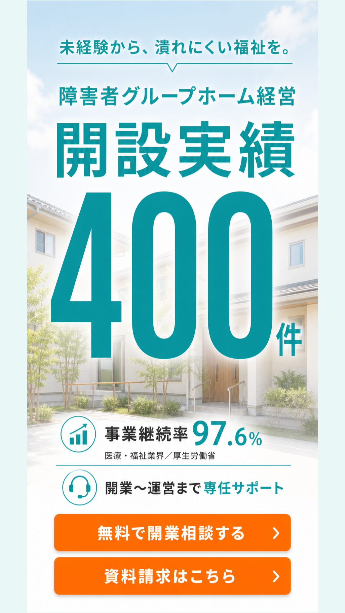
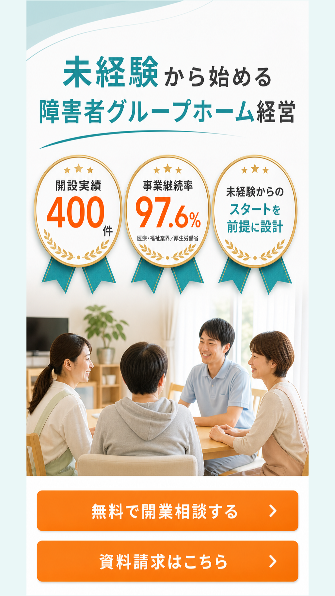
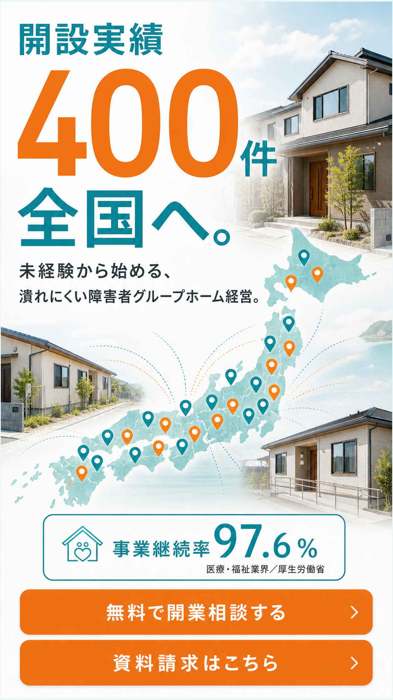
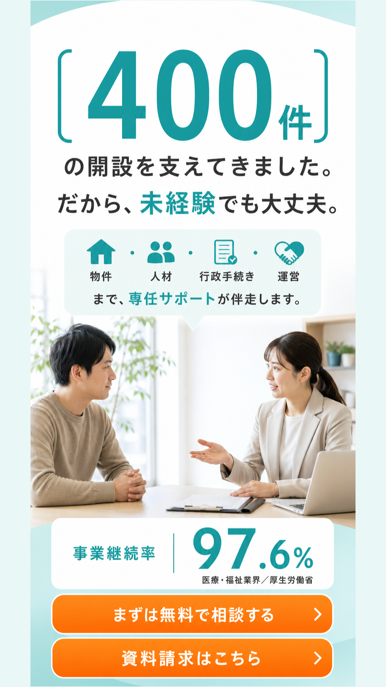
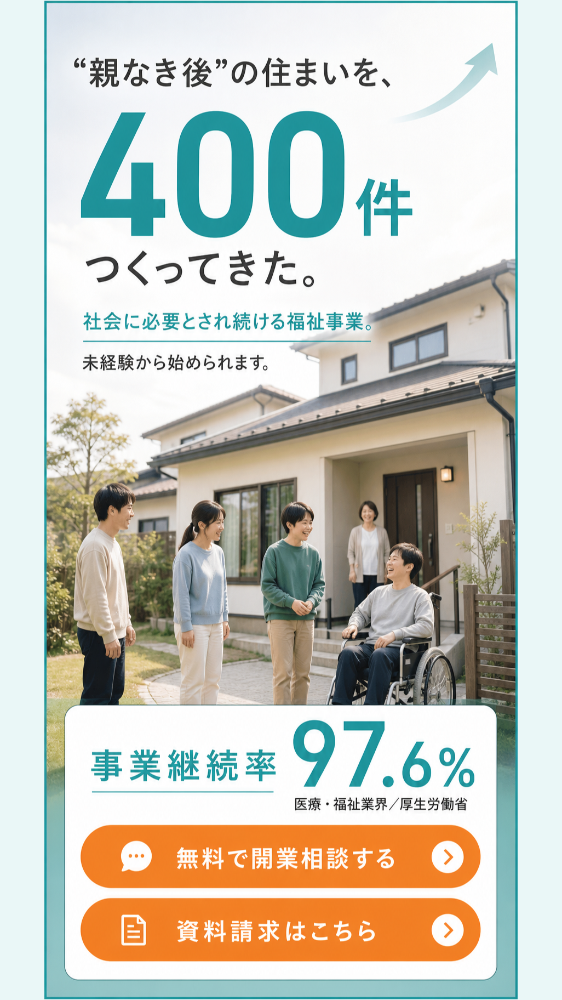
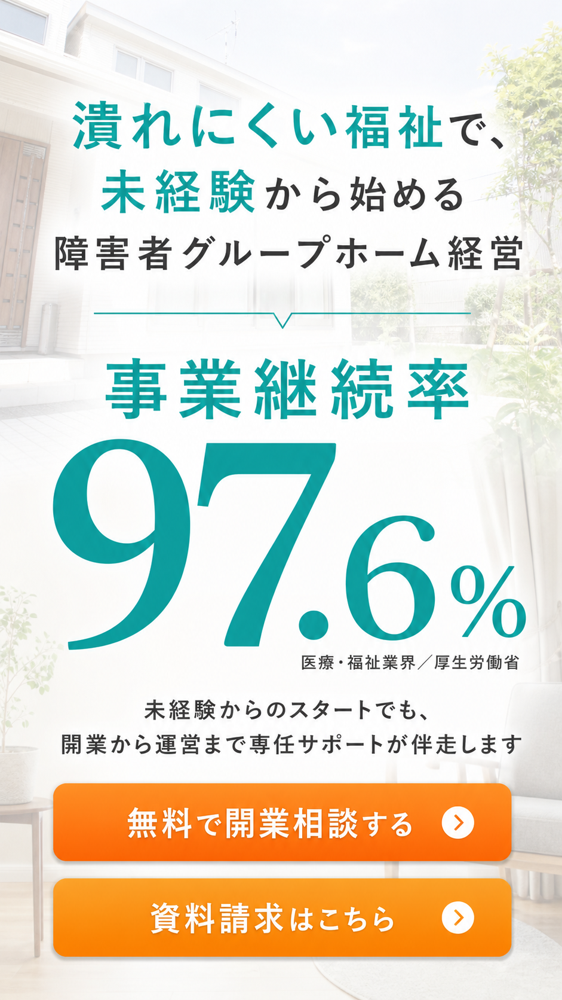
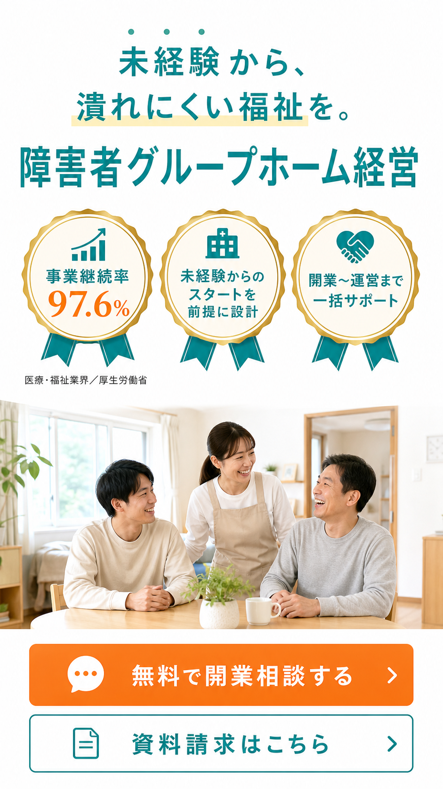
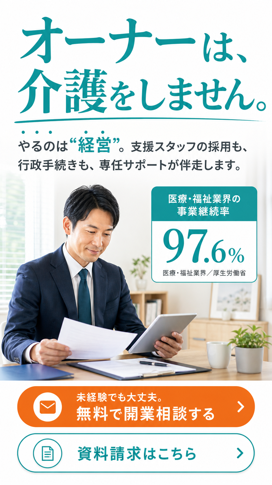
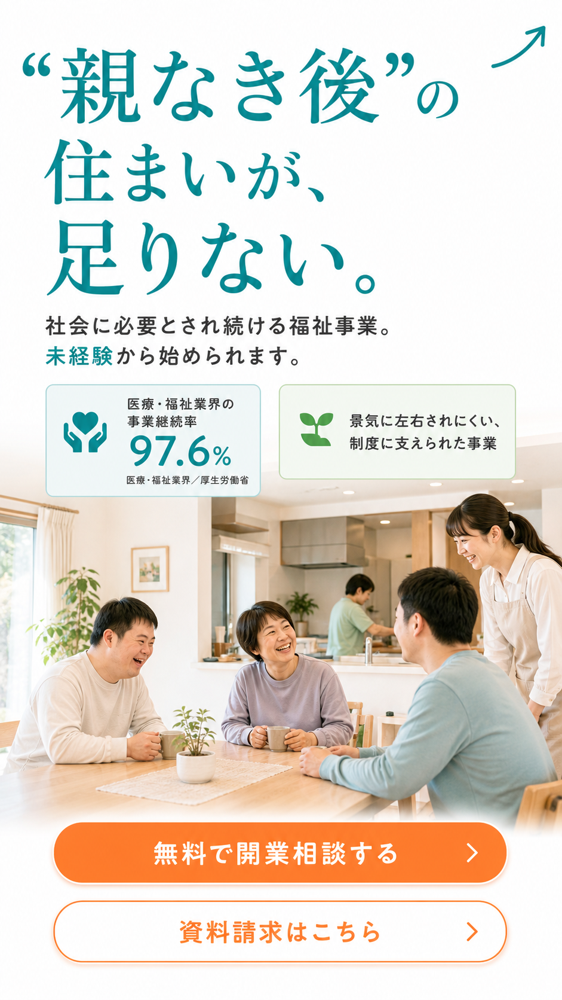
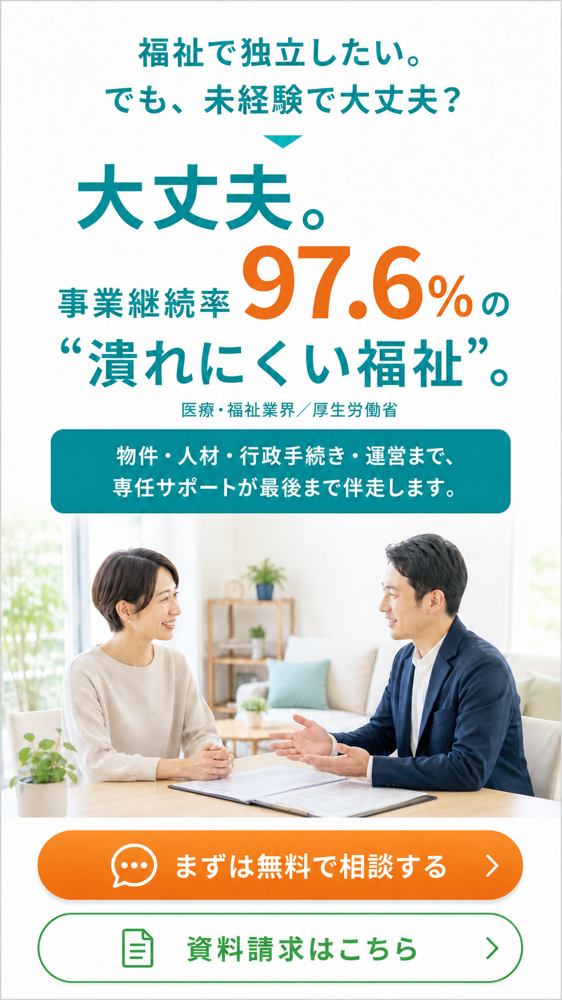

RUNBIRD ／ OWL障害者GH 独立起業向けLP ／ ファーストビュー案
独立LP ファーストビュー案 10枚｜ご確認のお願い
2026/8/6 星崎 ※社内共有用（noindex・個人情報なし）／すべて方向決めのモック（デザイン見本）。本番反映は確定後。
◆ 結論・おすすめ（先に3点）
- 方向は2系統：A=「継続率97.6%」主役（5枚）／B=「開設実績400件」主役（5枚）。どちらを軸にするか選定したい。
- おすすめ：実績を出せるならインパクト大のB系（特にjisseki-v1/v4）。継続率軸ならv5×v1のA/B。
- ただし実績数字「400」は確定が必要（下記）。確定できない場合はA系（97.6%主役）で先行するのが安全。
？ 未確定・ご確認いただきたい点（最重要）
- 実績数字がページ内で不一致：現行LPは FV「400件」／FAQ「180社」／料金「実績4社」＝3つバラバラ。どれが正しいか。
- 実績の"意味（框）"が案でズレている：jisseki-v4「400件の開設を支えてきました」＝支援実績（安全）／ v1・v2・v3「開設実績400件」・v5「400件つくってきた」＝OWL自社が開設・運営したとも読める。
お願い：①正しい実績数字（400／180／その他）②表現は「開設実績」か「開業サポート実績」か。この2点が決まれば、正しい1枚に整えて本番へ。確定まで実績数字は本番に出しません（景表法・#13）。
B. 「開設実績400件」を主役に（実績訴求型・今回5枚）

B-1 特大数字1枚看板推し
開設実績400件をドーンと主役。健生/ファイナンスアイ型。インパクト最大。

B-2 実績3バッジ
400件＋継続率97.6%＋未経験前提の3バッジ。信頼感。

B-3 全国へ（地図）
「開設実績400件、全国へ」。広がりを地図で表現。

B-4 支援実績→安心推し・框が安全
「400件の開設を支えてきた。だから未経験でも大丈夫」。支援実績の框で景表法的に安全。

B-5 親なき後×実績框に注意
「"親なき後"の住まいを400件つくってきた」。社会性は強いが"自社が作った"と読める表現に注意。
A. 「継続率97.6%」を主役に（前回5枚）

A-1 97.6%巨大数字推し
継続率97.6%を中央に一枚看板。差別化の武器を最大化。

A-2 信頼バッジ3つ
97.6%＋未経験＋一括サポート。無難で堅実。

A-3 オーナーは介護しない
開業最大の不安を先回りで解消。個性的。

A-4 親なき後（社会性）
需要が伸び続ける＝潰れにくい。共感フック。

A-5 問いかけ→回答推し・検索意図一致
「未経験で大丈夫？→大丈夫。97.6%」。この独立LPに来る"起業/独立"検索の気持ちに直で刺さる。